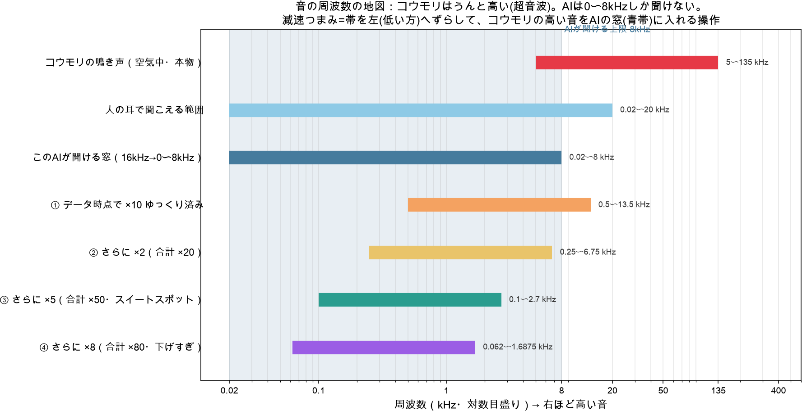
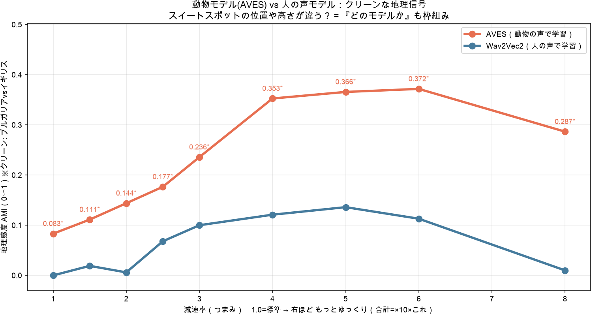
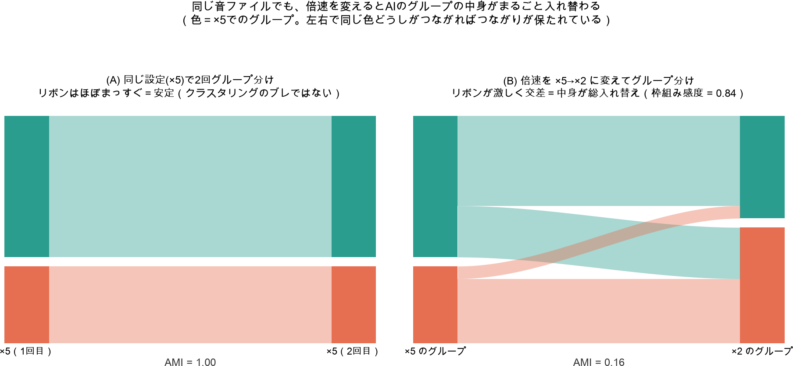
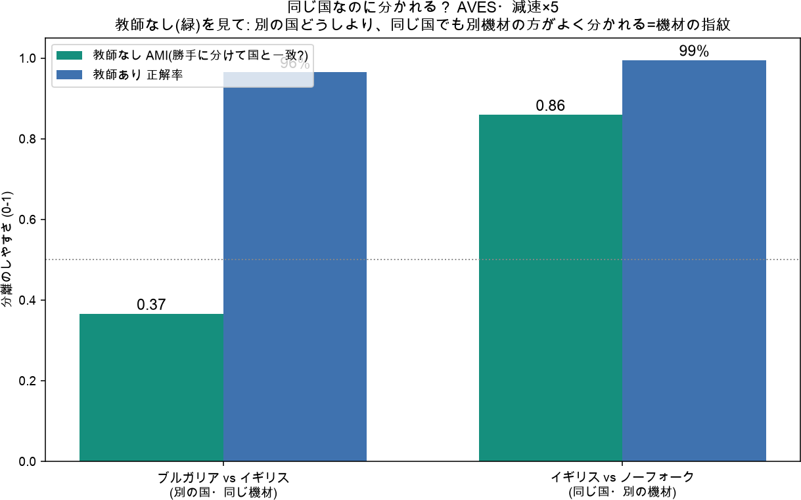

届かない超音波
人の耳にもAIにも高すぎて入らない。
Madoka ・ 反響定位とAIをめぐる研究レポート ・ 2026年7月
Madoka ・ A study on echolocation and AI ・ July 2026
AIはコウモリの鳴き声に「似た音のまとまり(パターン)」を見つける。では、そのパターンは——
声そのものに、はじめから刻まれた性質。
音の変換・モデル・評価という、人間側の選択。
AI finds "clusters of similar sound" in bat calls. But where do those patterns come from —
A property already written into the voice itself.
Our own choices: the transform, the model, the evaluation.
哲学者ネーゲル「コウモリであるとはどのようなことか」——人間の主観からもっとも遠い知覚世界。だからこそ、AIの結果に人間のクセがどれだけ混じるかを試すのに最適な相手。
人の耳にもAIにも高すぎて入らない。
ユクスキュルの「環世界」——他者の経験は覗けない。
環境変化を鋭敏に映す生態指標。
Nagel's "What is it like to be a bat?" — the perceptual world furthest from human subjectivity. That is exactly why it best tests how much of us leaks into AI's results.
Too high for human ears and AI alike.
Uexküll's "Umwelt" — we can't look inside another's experience.
A sensitive indicator of ecological change.

音を「768個の数値」に変換した指紋。似た音は似た数値になる。
正解を見ずに、似た音どうしを自動でグループ分けする。
そのグループが地理（国）をどれだけ言い当てるか。1=完全一致、0=無関係。
A sound turned into "768 numbers" — its fingerprint. Similar sounds get similar numbers.
Grouping similar sounds automatically, without any answer key.
How well those groups predict geography (country). 1 = perfect, 0 = unrelated.
変換のつまみ（減速・フィルター）を変える方が、録音地を変えるよりパターンを大きく動かす。→ 構造は人間側のレンダリング。
パターンは設定を変えても安定し、むしろ地理に沿う。→ 構造はコウモリ側の信号の性質。
Changing the knobs (slowing, filtering) shifts the pattern more than swapping sites. → Structure is our rendering.
The pattern stays stable across settings and tracks geography. → Structure is a property of the bat's signal.
人の声で学習（英語の朗読）。
動物の声で学習（鳥・哺乳類ほか）。
両モデルとも16kHz の窓（0〜8kHz）しか扱えない。だから減速が不可欠。
市民科学者が道路沿いで録音した探索音。
・ ブルガリア
・ イギリス
・ ノーフォーク = 据え置き録音で機材がちがう＝交絡
Trained on human speech (English audiobooks).
Trained on animal sounds (birds, mammals, more).
Both only handle a 16kHz window (0–8kHz). Slowing is unavoidable.
Search calls recorded roadside by citizen scientists.
・ Bulgaria
・ UK
・ Norfolk = fixed recorder, different gear = a confound

標準の変換のままでは、地理はほとんど見えない。より強く引き伸ばすという人間の選択だけで、「国のちがい」が顕在化する。
With the standard transform, geography is barely visible. Just the human choice to stretch harder makes the difference between countries surface.

×2で同じグループだった音が、×5ではまったく別の仲間にまとめられる。声そのものは何も変わっていないのに。
A sound grouped together at ×2 lands with a completely different set at ×5 — though the voice itself hasn't changed at all.
決定的な事実：同じ国（イギリスとノーフォーク）の方が、別々の国（ブルガリアとイギリス）より、はっきり分離した。

The decisive fact: the same country (UK vs Norfolk) separated more cleanly than two different countries (Bulgaria vs UK).
機材をそろえたブルガリア対イギリス。同じ埋め込みを、二つの道具で測ると——
| 測り方 | 結果 | 読み |
|---|---|---|
| 教師なし（クラスタリング） | AMI 0.00 | 地理は自動的には見えない |
| 教師あり（正解率） | 86% | 探せば地理は取り出せる |
Same-gear Bulgaria vs UK. Measure the same embedding with two tools —
| Tool | Result | Reading |
|---|---|---|
| Unsupervised (clustering) | AMI 0.00 | Geography doesn't surface on its own |
| Supervised (accuracy) | 86% | Look for it and geography comes out |
コウモリの探索音は 45〜135kHz と高い。動物音に習熟したAVESが有利。
先行研究の「歌」は約15.5kHzと人の声に近く、人の声モデルが適した。
エコロケーションの正解率
AVES（動物）／ 人の声モデル
どのモデルが勝つかは音の高さで変わる。どれを選ぶかもまた人間側の選択（枠組み）。
Search calls run 45–135kHz. A model fluent in animal sound wins.
Prior work's "song" sits near 15.5kHz, close to speech — so a speech model fit.
Echolocation accuracy
AVES (animal) / human-voice model
Which model wins depends on pitch. And which to pick is itself a human choice (framework).
見かけの地理差の大半は機材の違い。
どれだけ引き伸ばすかで結論が変わる。
教師なし0 / 教師あり86%——道具で逆転。
Most apparent geography was equipment.
How far you stretch changes the answer.
Unsupervised 0 / supervised 86% — the tool flips it.
全地点で機材・方法をそろえたか。差が「地理」に化けていないか。
減速・フィルターをどれだけ変えると結論が変わるか、系統的に走査したか。
教師なし・ありの両方で見たか。「見えない」を「無い」と混同していないか。
偶然補正済みの指標で測り、並べ替え検定で偶然でないと確認したか。
Same gear and method everywhere? Could a difference masquerade as "geography"?
Did you sweep slowing/filtering to see how much the conclusion moves?
Both unsupervised and supervised? Not mistaking "invisible" for "absent"?
Chance-corrected metric, and a permutation test to rule out coincidence?
— 見えるかどうかは、まず人間側の枠組みで決まる。
— What's visible is decided first by our framework.